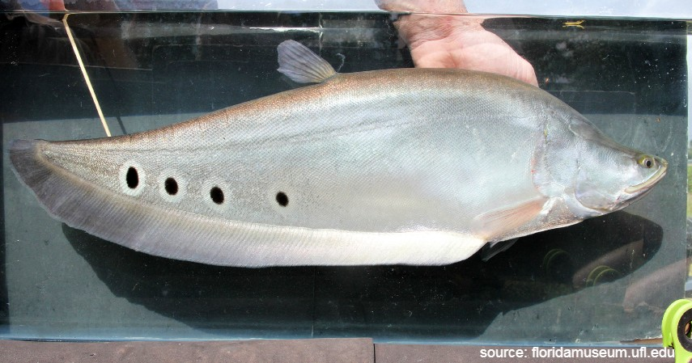

Ikan Belida
Saat ini ikan belida menjadi semakin langka dan bahkan hampir punah! Ikan ini adalah santapan favorit khas Kota Palembang untuk dijadikan pempek. Namun, jenis lain dari ikan belida juga menjadi salah satu ikan predator untuk peliharaan yang menghiasi akuarium di rumahmu. Seperti jenis belida royal, albino, dan bengkok.
Dibandingkan dengan ikan lain, belida sebenarnya sangat sederhana dengan warna keabuan dan motif bentol hitam. Namun, bentuknya yang unik karena menyerupai pisau serta tingkat kelangkaannya membuat para penghobi ikan hias memperebutkannya.
Perawatan
Ikan belida atau yang memiliki nama latin Chitala ornata tergabung dalam keluarga Notopteridae. Masih termasuk keluarga ikan jenis knifefish yang mayoritas memiliki ciri fisik yang sama. Ikan ini bisa dipelihara di aquarium maupun kolam. Tetapi jika sudah besar, sebaiknya ikan belida dipelihara di kolam. Maklum saja, ikan ini bisa mencapai ukuran sampai 1 meter. Tetapi umumnya jika dipelihara di aquarium hanya mencapai 50 cm saja. Ukuran aquarium ideal untuk ikan ini seharusya berkapasitas 750 liter, tetapi untuk belida muda, aquarium ukuran 60 cm saja sudah cukup. Anda bisa memperkirakannya sendiri dengan membandingkan tubuh ikan dengan besarnya aquarium. Yang penting, ada cukup ruang untuk ikan berenang, bersembunyi dan menyerupai habitat alaminya. Agar lebih mirip habitat asli, media pemeliharaan ikan belida bisa Anda berikan tanaman-tanaman air, akar-akaran, batu untuk bersembunyi dan juga substrat berupa pasir. Tenang saja, ikan ini tak akan menghabiskan tanaman air Anda, karena ia merupakan ikan karnivora.
Agar ikan tambah nyaman dan terhindar dari berbagai penyakit, Anda bisa memberikan belida asupan oksigen yang cukup, air yang jernih dan pencahayaan yang cukup. Oksigen bisa diperoleh dari mesin aerator, atau jika Anda menggunakan head pump, Anda tidak perlu menambahkan aerasi lagi, karena sudah didapat dari arus yang dihasilkan pump, atau air yang terjatuh dari box filter. Kurangnya kadar oksigen terlarut, dapat menyebabkan ikan jadi tidak nafsu makan, sehingga pertumbuhannya bisa terhambat. Air jernih adalah air yang juga berkualitas baik, kondisi ini bisa tercapai dengan menggunakan filtrasi yang baik. Untuk belida muda, kualitas air sangat penting untuk keberlangsungan hidupnya, karena masih rentan kematian. Saat dewasa, ikan ini akan menjadi ikan yang kuat. Anda bisa mempertahankan kondisi air ideal untuk ikan belida dengan tingkat keasaman 6,5 – 7,5 dengan suhu 27 sampai 30 derajat Celcius. Belida merupakan ikan nocturnal yang artinya ia lebih aktif di malam hari. Kebanyakan ikan nocturnal menyukai cahaya yang tidak terlalu kuat. Anda bisa menggunakan lampu yang tidak terlalu terang, serta menyediakan tempat persembunyian untuk ikan. Ia suka sekali bersembunyi. Lebih jauh mengenai peralatan aquarium air tawar, Anda bisa langsung ke Macam-macam Peralatan Aquarium dan Fungsinya.
Pakan juga perlu menjadi perhatian khusus dalam cara memelihara ikan belida di aquarium. Itu bertujuan agar ikan nyaman dan kesehatannya terjaga. Di alam liar, ikan belida bisa memakan serangga, larva, cacing maupun ikan-ikan kecil. Jika memelihara ikan belida di aquarium, Anda juga bisa memberi belida dengan pakan alami seperti di atas, maupun pakan buatan seperti pelet. Tapi, pelet untuk ikan belida adalah pelet tipe tenggelam. Selain itu, udang-udangan, potongan daging ikan segar, serta makanan beku juga bisa menjadi pakan untuk belida. Anda bisa beri makan ikan belida dua sampai tiga kali sehari, dengan porsi secukupnya. Jika memberi makanan potong, sebaiknya sesuaikan dengan mulut ikan. Ikan ini memiliki mulut yang tidak terlalu besar, sehingga Anda perlu memotongnya lebih kecil lagi.